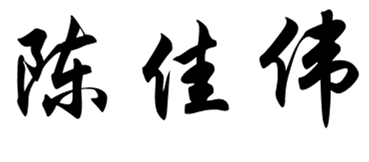

News
18 Oct. 2022
One full paper is accepted by WSDM’23, on Fair Knowledge Distillation.
15 Aug. 2022
Two papers are accepted by CIKM’22, on Recommendation Datasets.
15 Aug. 2022
One survey paper is accepted by TOIS, on Recommendation Debiasing.
15 Jan. 2022
One full paper is accepted by WWW'22, on Hypergraph-based Personalized Search.
29 Dec. 2021
We release a new version of the survey on recommendation debiasing, with supplementing causal explanations of biases and the latest debiasing technologies.
8 Aug. 2021
One full paper is accepted by CIKM'21, on disentangled knowledge graph representation learning.
27 July. 2021
One full paper is accepted by ICCV'21, on GCN-based knowledge distillation.
27 July. 2021
One full paper is accepted by TKDE, on sampling for recommendation.
12 June. 2021
Our tutorial on Bias and debias in recommendation is also accepted by Recsys'21.
18 May 2021
One full paper is accepted by KDD'21, on causal inference for recommendation debiasing.
15 April 2021
One full paper is accepted by SIGIR'21, on universal debiasing framework for recommendation .
7 Feb. 2021
One full paper is accepted by TOIS'21, on Sampling for recommendation .
15 Jan. 2021
One full paper is accepted by WWW'21, on Equivalence of GCN and label propagation .
15 Dec. 2020
One tutorial is accepted by WWW'21, on Bias and debias in recommendation.
11 Nov. 2019
Two full papers are accepted by AAAI, on Unbiased recommendation and Graph embedding.
|
Jiawei Chen
 "Hundred Talent" Research Fellow
College of Computer Science and Technology
38 Zheda Road, Hangzhou, China 230027
Email: sleepyhunt AT zju.edu.cn
|
I am a "Hundred Talent" Research Fellow in College of Computer Science and Technology, Zhejiang University. I have over 20 publications appeared in top conferences and journals such as AAAI, WWW, SIGIR, KDD, TOIS and CIKM. My research interests include information retrieval, data mining and machine learning, particularly in recommender systems, robustness, and graph neural network. Moreover, I have served as the PC member for top-tier conferences including AAAI, WWW, KDD, ACMMM and the invited reviewer for prestigious journals such as TNNLS, TKDE, TOIS.
Notes: 1. We recently release a new version of the survey on biases in recommender system:
- Bias and Debias in Recommender System: A Survey and Future Directions
- You may be interested in this emerging topic!
2. I'm looking for self-motivated master/PHD students. If you are interested in the recommender system, graph mining, causal inference or robust machine learning, please send me your CV.
- Bias and Debias in Recommender System: A Survey and Future Directions
- You may be interested in this emerging topic!
2. I'm looking for self-motivated master/PHD students. If you are interested in the recommender system, graph mining, causal inference or robust machine learning, please send me your CV.
Tutorial
 |
Bias Issues and Solutions in Recommender System
Jiawei Chen, Xiang Wang, Fuli Feng, Xiangnan He WWW'21, RecSys'21 Slide |
Selected Publications
|
Unbiased Knowledge Distillation for Recommendation
Gang Chen, Jiawei Chen*, Fuli Feng, Sheng Zhou, Xiangnan He* WSDM'23 (Full Paper, Accept rate: 17.8%), *Corresponding author |
|
KuaiRec: A Fully-observed Dataset and Insights for Evaluating Recommender Systems
Chongming Gao, Shijun Li, Wenqiang Lei, Biao Li, Peng Jiang, Jiawei Chen, Xiangnan He, Jiaxin Mao, Tat-Seng Chua CIKM'22 (Full Paper) |
|
KuaiRand: An Unbiased Sequential Recommendation Dataset with Randomly Exposed Videos
Chongming Gao, Shijun Li, Yuan Zhang, Jiawei Chen, Biao Li, Xiangnan He, Wenqiang Lei, Peng Jiang CIKM'22 (Resource Track) |
|
Bias and Debias in Recommender System: A Survey and Future Directions
Jiawei Chen, Hande Dong, Xiang Wang, Fuli Feng, Meng Wang, Xiangnan He TOIS |
|
Interactive Hypergraph Neural Network for Personalized Product Search
Dian Cheng, Jiawei Chen*, Wenjun Peng, Wenqin Ye, Fuyu Lv, Tao Zhuang, Xiaoyi Zeng & Xiangnan He WWW'2022 (Full, Accept rate: 17.7%), *Corresponding author |
|
DisenKGAT: Knowledge Graph Embedding with Disentangled Graph Attention Network
Junkang Wu, Wentao Shi, Xuezhi Cao, Jiawei Chen* Wenqiang Lei, Fuzheng Zhang, Wei Wu, Xiangnan He CIKM'2021 (Full, Accept rate: 21.7%), *Corresponding author |
|
SamWalker++: Recommendation with Informative Sampling Strategy
Can Wang, Jiawei Chen*, Sheng Zhou, Qihao Shi, Yan Feng and Chun Chen TKDE, *Corresponding author |
|
Distilling Holistic Knowledge with Graph Neural Networks
Sheng Zhou, Yuchen Wang, Defang Chen, Jiawei Chen, Xin Wang, Can Wang, Jiajun Bu ICCV'21 (Full, Accept rate: 25.9%) |
|
Model-Agnostic Counterfactual Reasoning for Eliminating Popularity Bias in Recommender System
Tianxin Wei, Fuli Feng, Jiawei Chen, Ziwei Wu, Jinfeng Yi & Xiangnan He KDD'2021 (Full, Accept rate: 15.4%) |
|
AutoDebias: Learning to Debias for Recommendation
Jiawei Chen, Hande Dong, Yang Qiu, Xiangnan He, Xin Xin, Liang Chen, Guli Lin, Keping Yang SIGIR'2021 (Full, Accept rate: 21%) |
|
CoSam: An Efficient Collaborative Adaptive Sampler for Recommendation
Jiawei Chen, Chengquan Jiang, Can Wang, Sheng Zhou, Yan Feng, Chun Chen, Martin Ester, Xiangnan He TOIS'2021 |
|
On the Equivalence of Decoupled Graph Convolution Network and Label Propagation
Hande Dong,Jiawei Chen*, Fuli Feng, Xiangnan He, Shuxian Bi, Zhaolin Ding, Peng Cui WWW'2021 (Full, Oral, Accept rate: 20.6% ), *Corresponding author |
|
Fast Adaptively Weighted Matrix Factorization for Recommendation with Implicit Feedback
Jiawei Chen, Can Wang, Sheng Zhou, Qihao Shi, Jingbang Chen, Yan Feng, Chun Chen AAAI 2020 (Full, Oral, Accept rate: 20.6%) |
|
DGE: Deep Generative Network Embedding Based on Commonality and Individuality
Sheng Zhou, Xin Wang, Jiajun Bu, Martin Ester, Pinggang Yu, Jiawei Chen , Qihao Shi, Can Wang AAAI 2020 (Full, Poster, Accept rate: 20.6%) |
|
Samwalker: Social recommendation with informative sampling strategy
Jiawei Chen, Can Wang, Sheng Zhou, Qihao Shi, Yan Feng, Chun Chen WWW 2019 (Full, Oral, Accept rate: 18%) |
|
Adaptive Influence Blocking: Minimizing the Negative Spread by Observation-Based Policies
Qihao Shi, Can Wang, Deshi Ye, Jiawei Chen, Yan Feng, Chun Chen ICDE 2019 (Full, Oral) |
|
Social recommendation with missing not at random data
Jiawei Chen, Can Wang, Martin Ester, Qihao Shi, Yan Feng, Chun Chen ICDM 2018 (Full, Oral, Accept rate: 8.86%) |
|
Modeling Users' Exposure with Social Knowledge Influence and Consumption Influence for Recommendation
Jiawei Chen, Yan Feng, Martin Ester, Sheng Zhou, Chun Chen, Can Wang CIKM 2018 (Full, Oral, Accept rate: 17%) |
Professional Services
|
PC/SPC Member of Conferences: (Senior) Program Committee Member of IJCAI (2021,2022) Program Committee Member of WWW (2021,2022,2023) Program Committee Member of AAAI (2021,2022,2023) Program Committee Member of KDD (2021,2022) Program Committee Member of ACMMM (2020,2021,2022) Program Committee Member of ECML-PKDD (2020,2021) Invited Reviewer for IEEE Transactions on Neural Networks and Learning Systems (TNNLS) Invited Reviewer for IEEE Transactions on Information system (TOIS) Invited Reviewer for IEEE Transactions on Knowledge and Data Engineering (TKDE) |
Experiences
| Postdoc Research Fellow, University of Science and Technology of China Advisor: Prof. Xiangnan He, July 2020 - July 2022 |
Education
| Zhejiang University (ZJU) Ph.D. in Computer Science Feb. 2017 - June 2020, Hangzhou Advisor: Prof. Chun Chen Master in Computer Science Sep. 2014 - Feb.2017, Hangzhou Advisor: Prof. Chun Chen |
| University of Electronic Science and Technology of China (UESTC) Bachelor in Micro-electronic Sep 2010 - June 2014, Chengdu |
Useful Links
| Machine Learning Reading List |
| Deep Learning Reading List |
Last update: Oct. 20, 2022. Webpage template borrows from Xiangnan He.